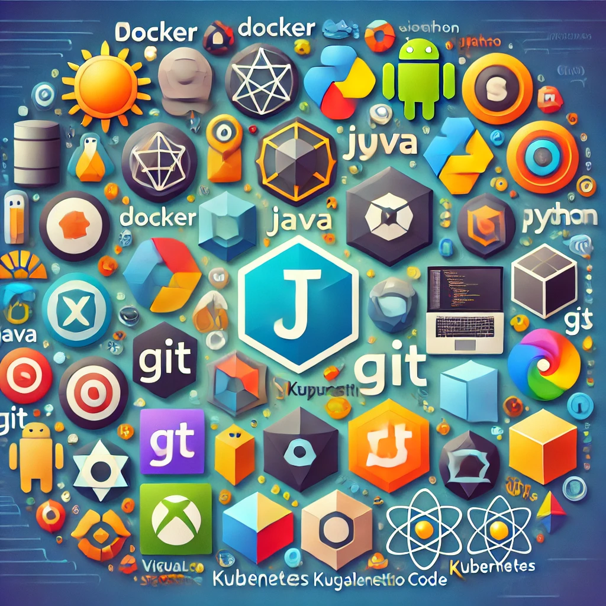

Development Environment On Mac
January 15, 2025

I use different dev tools (Java, Python, Docker...) but I use some of them only rarely. So I forget how I installed them, what version manager I used etc. So this is the note to future me to look it up.
 Counting comments...
Counting comments...